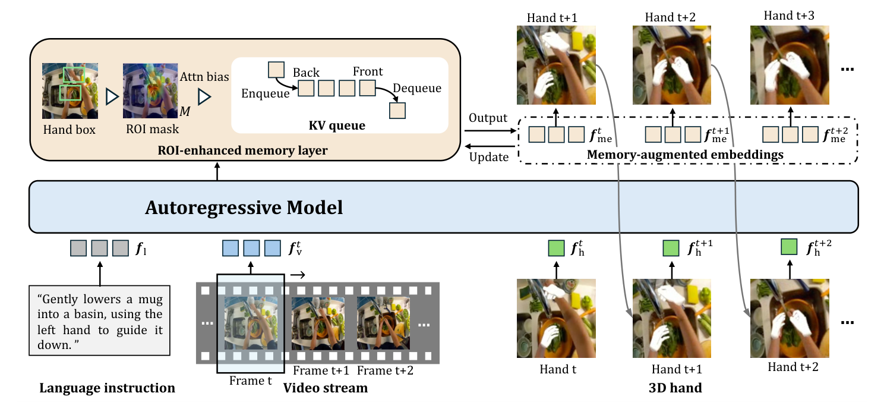
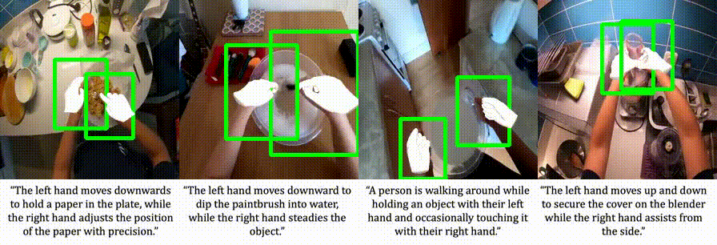

Predictive Representation Learning for Manipulation via Streaming Egocentric 3D Hand Forecasting
Forecast human hands. Learn to manipulate.
Institute of Industrial Science, The University of Tokyo
A frozen SFHand encoder with a small policy head, trained from 30 demonstrations per task and evaluated with randomized object placement.
| Method | Pick-place | Drawer | Microwave | Switch | Pour | Avg. |
|---|---|---|---|---|---|---|
| MPI | 83.3 | 70.0 | 63.3 | 50.0 | 43.3 | 62.0 |
| EgoHOD | 83.3 | 73.3 | 66.7 | 53.3 | 50.0 | 65.3 |
| SFHand | 86.7 | 76.7 | 70.0 | 63.3 | 63.3 | 72.0 |
The same frozen SFHand encoder drives a gripper in Franka Kitchen and a dexterous hand in Adroit. A lightweight policy head is trained per task on top of the representation; the encoder is never fine-tuned.
SFHand takes a streaming egocentric video, a language instruction and the current 3D hand state, and autoregressively forecasts the next hand state: hand type, 2D box, 3D pose and trajectory. An ROI-enhanced memory layer keeps a queue of past embeddings and focuses attention on the hand region. Forecasting forces the representation to learn both how humans manipulate objects and how the motion unfolds next.

White hands are forecasted by SFHand from previous frames and hand states only. No future frame is observed.
The first open-source large-scale dataset pairing synchronized 3D hand poses with sentence-level language instructions, pre-segmented into short clips for forecasting.

@inproceedings{liu2026sfhand,
title = {Predictive Representation Learning for Manipulation via Streaming Egocentric 3D Hand Forecasting},
author = {Liu, Ruicong and Huang, Yifei and Ouyang, Liangyang and Kang, Caixin and Sato, Yoichi},
booktitle = {Conference on Robot Learning (CoRL)},
year = {2026}
}